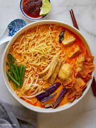

Curry Mee

Ingredients
Noodles and side dishes
- 200g egg noodles
- 100g eggplant, cut into long pieces
- 50g fried tofu skin
- 50g fried tofu pok, cut into halves
- 75g long beans
- 1 hard-boiled egg, cut in half
Soup
- 1 packet Nahida curry paste
- 300ml cocogoat milk, ideally fresh
- 500ml water
Steps
- First, we will prepare the soup. Set the stove to medium heat and once the pot is hot, add the curry paste
- Once the fragrance starts to come out, add the water and cook till it boils.
- Turn the stove to low heat and add the cocogoat milk
- In another pot, boil some water and blanch any ingredients that need to be cooked.
- Once all ingredients have been cooked, put the cooked noodles into a bowl and put the other ingredients on top of it.
- Finally, pour the soup into the bowl and the dish is ready to be served. Enjoy!